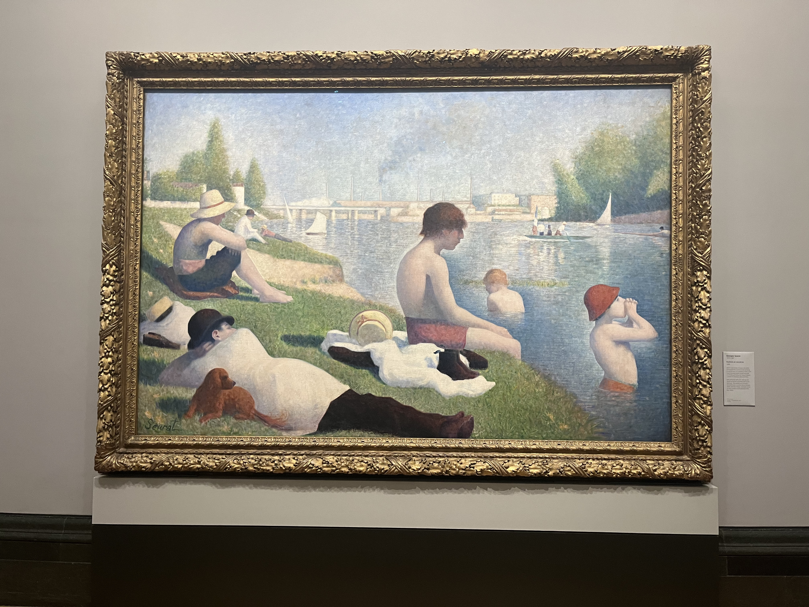
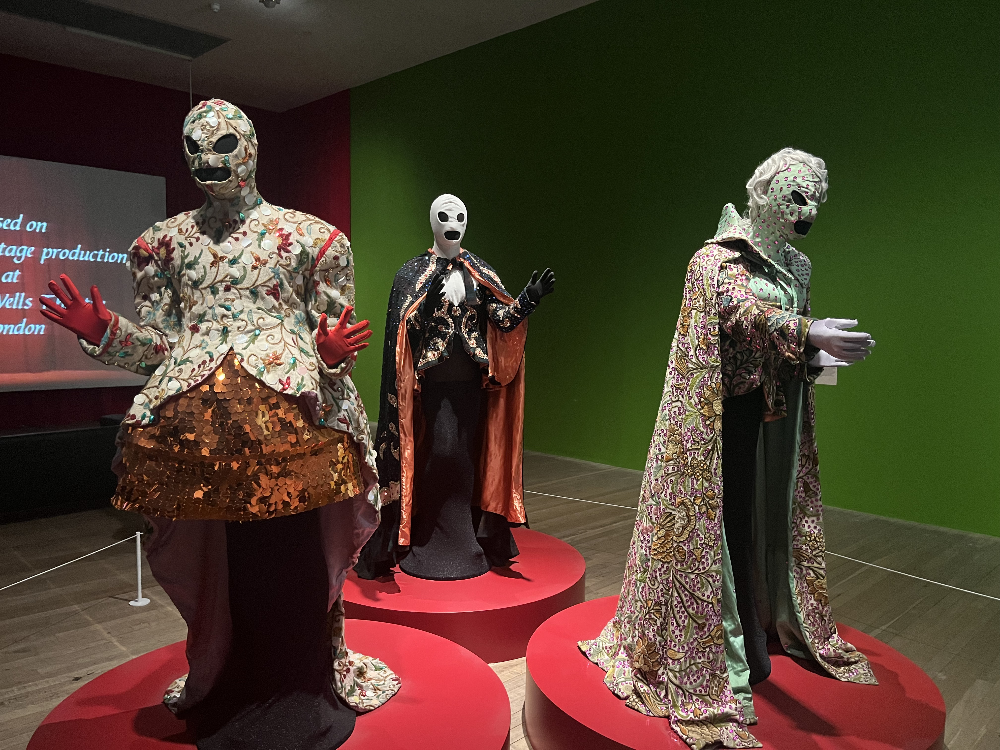
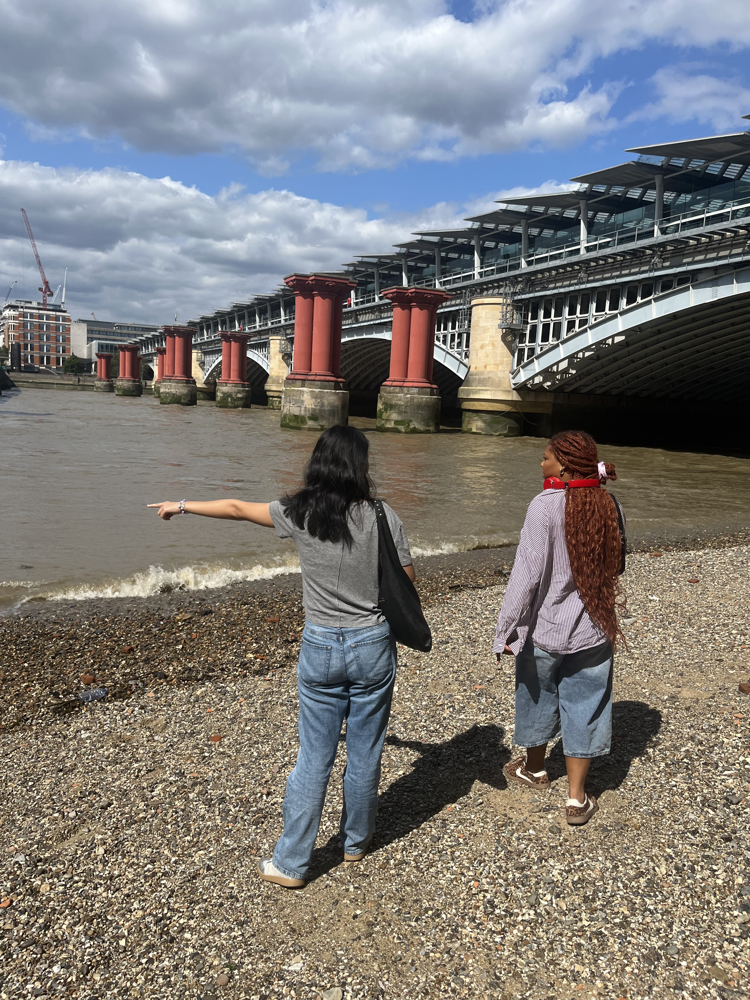
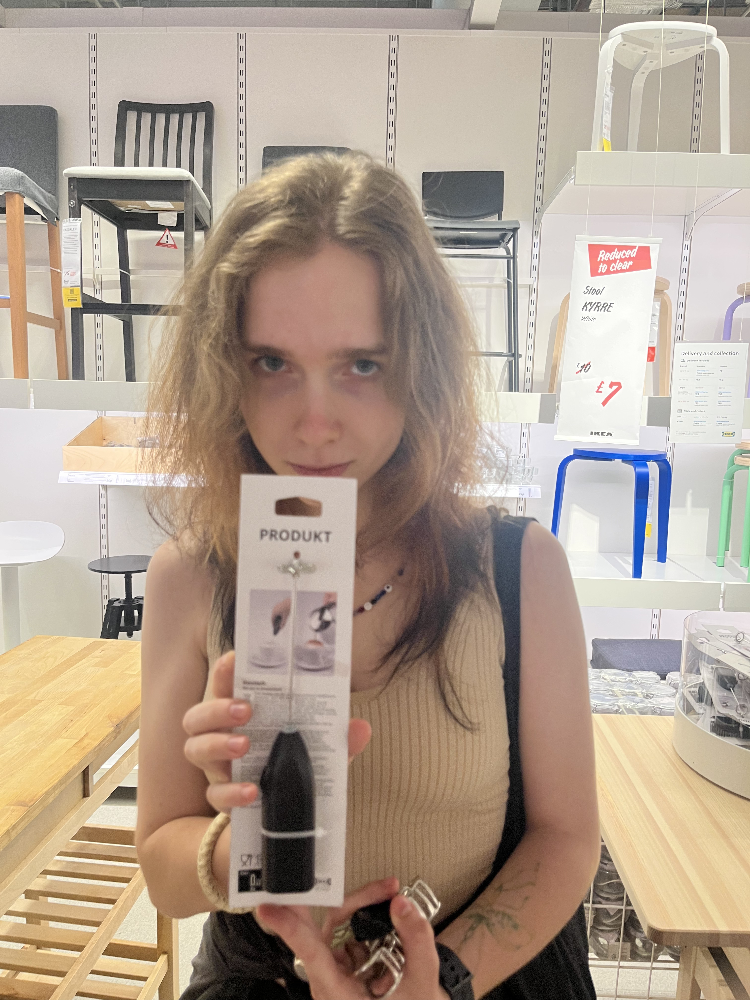
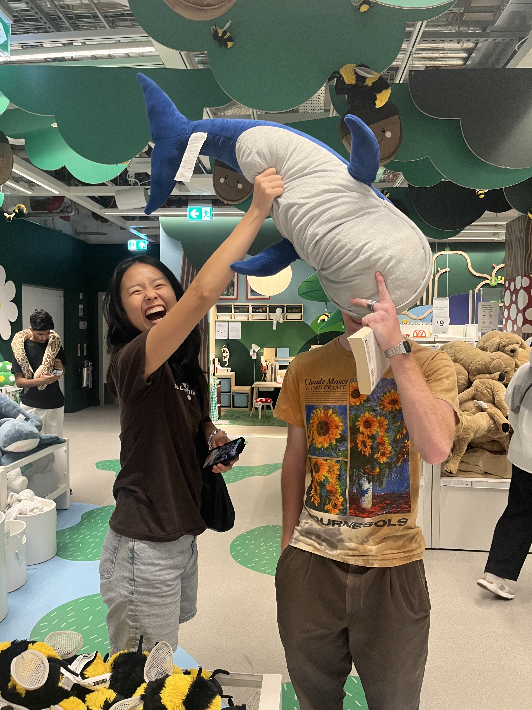
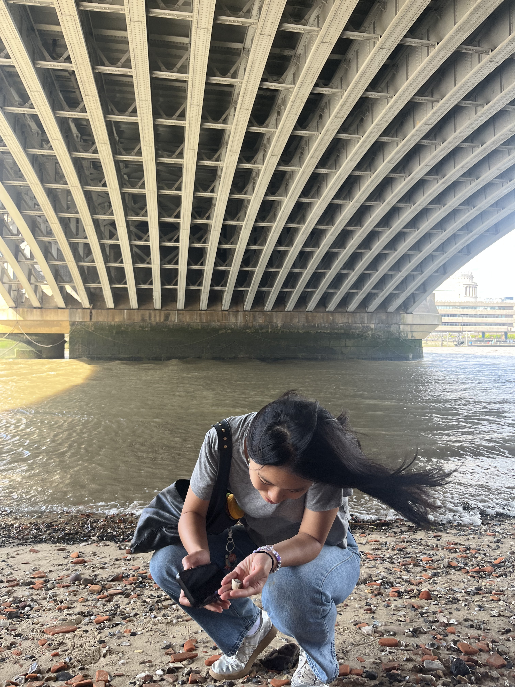
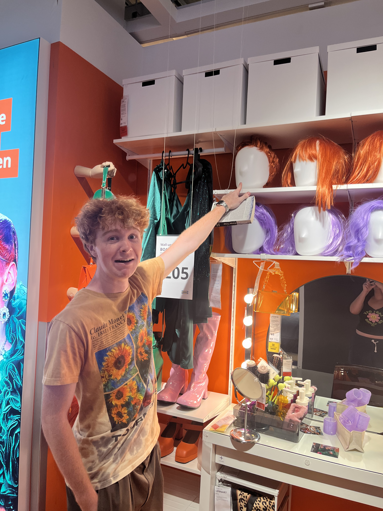

Week 3
Identity
You exit the train station and breath in the welcoming air of the pseudo-suburbs. The mom-and-pop shops, braid salons, and overgrown front lawns paint the residential streets with a charm that feels so much closer to your world. Your face contorts, brows furrowed at the menu, as you hope the Middle Eastern dishes might somehow seem more familiar than when you saw checked the menu a month ago. The massive murals of beautiful brown women tower over you, beckoning you to see them beyond their "aesthetic" or "vibe." You realize you took far less selfies this week and the lucky few you did are littered somewhere along the conveyor belt of daily messages to your only other mixed race friend. That's probably just a coincidence... Another tissue drops morosely onto your dorm room floor as you explain to your friend that you were never this hyperaware about your ethnic background before college. Being swallowed up in a new city, it's hard to not feel like you're so different. It's lonely. But every now and then, the sweet smile to your left asks for another bite of your tabbouleh and the flushed faces to the right shout out every single word of your favorite soul songs. Maybe you aren't so different after all--you just need to find the people who already knew that.





Evolution
Golden rays of sun pierce through the dreary, gray clouds and reflect off the crystal blue English Channel blowing kisses of warmth to your cheeks. Passing through the dorm lobby on your way to class, you know exactly where to go without even opening Google Maps. You peruse the wall of electronics, marveling at the sheer existence of Moore's Law and all the engineers who have been pushing it to its brink in just 75 years. Ten minutes ago, you flinched as the freezing cold waves crashed onto your shins, and now you're wading up to your chin in the water's soothing embrace. Your idle time is twinged with a feeling you can't quite pinpoint as 'sad.' Perhaps dull. Unremarkable. Ordinary. Your life here has become ordinary. You still forget sometimes that "chips" really means "fries," but those shocks from three weeks ago have dwindled down to mundane facts of life. And yet, you can still walk through a random Ikea and let yourself experience it anew through your friends' excitement and a shared childish humor. Or even empathizing with the groans about a "long" 40-minute commute. A change in novelty need not disappoint you. It reminds you that your daily life now was once a bright-eyed fantasy or even just a vague hunch. Feeling that your life is commonplace is a testament to how well you loved it over time, and you can always find ways to bring that love back.




Youth
Your eyes buzz across the heads in the queue in front of you, counting off in twelves to see when it'll finally be your turn. The tick-tick-ticking of the track pulses through your veins, and you erupt in a scream of joy, knowing your friends are watching the coaster jolt you up, down, and around. You cackle with your friends like a gaggle of middle schoolers at every silly Swedish word you pass. "When else are you gonna be 21 in London on a Saturday night?" The others tease and roll their eyes at your little Russian mouse voice, but you firmly believe it is just as funny every time. You can't stop mouthing jokes across the lengthy dinner table or fighting the giggles during the very serious and definitely immersive warehouse extravaganza. In the saxophonist's quiet smile, you see the young kid jamming out in his room finally getting all the hype he deserves. Each day that passes is another step towards the rest of your life, the next phase, the great beyond. Everyone asks about your future but all you can be certain about is your past. You've had so many firsts this trip, but you've also revisited joyous moments from childhood, refusing to let them be your last. Senior year compels you to think only of endings, but your life is only just beginning. You laugh everyday, you learn everyday, and you love everyday. You don't have to be 21 in London on a Saturday night to be happy and free. You just have to relish in being alive wherever life guides you. And you take the next step.



